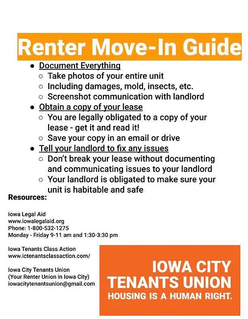

§216.8, §216.8A
Iowa tenants have the right to freedom from discrimination in housing. This includes: Renting property. Getting financial assistance with the rent at that property. Trying to purchase a home. Getting financial assistance to purchase that home. Iowa tenants are protected under the Federal Fair Housing Act, and also by Iowa’s own Fair Housing Act. The Federal Act protects seven classes of people and Iowa’s own law protects an additional four classes, so in total, eleven groups of people are protected from housing discrimination in Iowa.
An example of a discriminatory act would be if a landlord has a common lease that they sign with all tenants. If the landlord changes the lease terms for one tenant based only on the fact that the tenant is a member of one of the above groups, it would be considered housing discrimination.
§562A.12
Iowa landlords can take deductions from the tenant's deposit to cover: Damage in excess of normal wear and tear. Costs that the landlord has incurred from the tenant refusing to move out of the rental.
Landlords are responsible for placing a tenant’s deposit in an account in a financial institution, such as a bank or credit union. If the account does earn any interest, the interest belongs to the landlord for the first five years of the tenant’s tenancy. After that time, any interest earned would be the property of the tenant.
Landlords in Iowa have 30 days after receiving a tenant’s forwarding address to return the security deposit amount owed back to the tenant. The tenant has one year after moving out to supply the landlord with their forwarding address. If the tenant does not provide a forwarding address within a year, then the deposit becomes the landlord’s property.
§216.8, §216.8A
